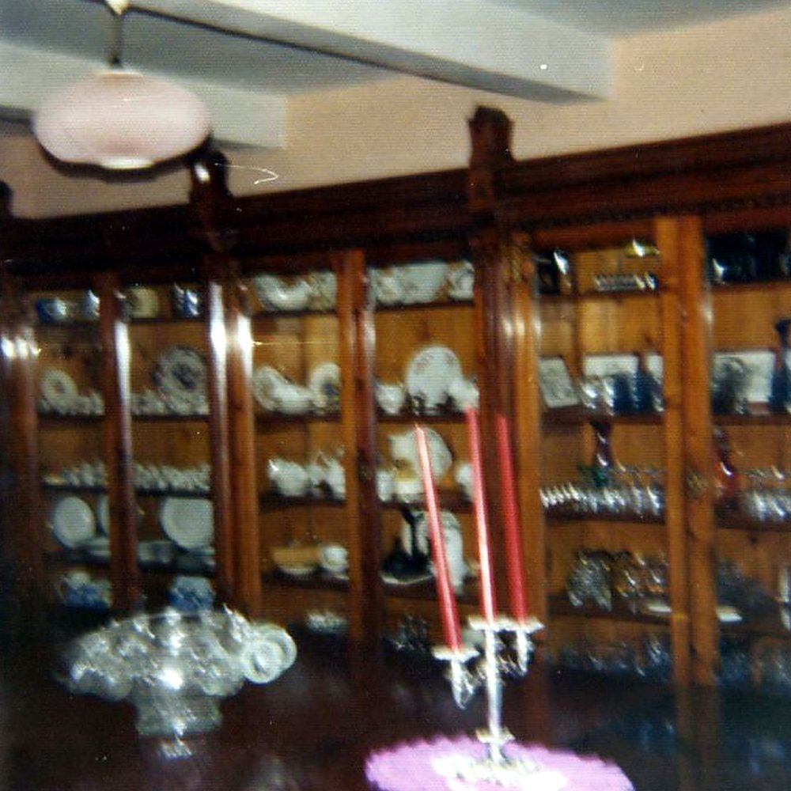

Mary Doreen (Nancy) Williams, 1913–1983
Nancy Williams was born at Great House Farm on 10 August 1913 and lived there all her life. In 1936 she married Fred Buckler of Barry at Llandough Church, and they raised seven children in the farmhouse. After Fred’s death in 1967 she went back to her maiden name, Williams.
She was the family’s voice in public for a quarter of a century. She spoke at the Leckwith Common inquiry in 1958, went before the county planning committee the same year, opened the house to the public in 1974 to argue against its demolition, and pleaded in court that the house was hers. She died at the farmhouse on 26 March 1983.
5 August 1936 — “Llandough Bride”
- Record:
EV-0230 (Legal Wiki, Evidence Register)
What the record shows. The Western Mail reported the wedding at Llandough Church of Fred Buckler, of Barry, and Mary Doreen (Nancy) Williams, of Great House Farm.
What it does not show. A snippet; the exact wedding date is not given.
7 May 1958 — The Leckwith Common inquiry
- Record:
EV-0035 (Legal Wiki, Evidence Register)
“Mrs. Mary Doreen Buckler, of Great House Farm, Llandough, said she did not oppose the proposal so long as it applied only to playing fields. About 130 years ago Lord Bute allowed her family “a slice of land” which was now Leckwith Common.”
What the record shows. The Western Mail reported Mrs Mary Doreen Buckler of Great House Farm at the inquiry into Cardiff’s Leckwith Common proposal, speaking of land Lord Bute had allowed her family.
What it does not show. Machine-read text; the page image has not been seen. It reports what she put to the inquiry, not whether any right existed.
20 November 1958 — Before the county planning committee
- Record:
EV-0037 (Legal Wiki, Evidence Register)
“Mrs. M D. Buckler was objecting to further industrial development in the vicinity of her farm, Ty Mawr, Penarth Road, Llandough.”
What the record shows. The Western Mail reported Mrs M. D. Buckler objecting to further industrial development near her farm, Ty Mawr, and putting it to the committee that land farmed by her family since 1667 had been “wrongfully appropriated”.
What it does not show. A press report of her statements to the committee; it decides nothing.
16 April 1974 — An open day at Tŷ Mawr
- Record:
EV-0048 (Legal Wiki, Evidence Register)
“The ownership of the house has been in dispute for 25 years but my family has lived here for more than 400 years …”
What the record shows. The Daily Telegraph reported that on 15 April 1974 Mrs Mary (Nancy) Williams held a public open day at Ty Mawr against its planned demolition, and printed her words, including that her solicitors had told her she had a valid case.
What it does not show. The house’s age and other traditions in the report are given as she gave them; the end of the cutting is lost.
3 July 1974 — A plea of ownership in the county court
- Record:
EV-0049 (Legal Wiki, Evidence Register)
What the record shows. In BP Pension Trust’s county-court action Mary (Nancy) Williams pleaded that she owned the house. The action was part-heard, adjourned and never relisted.
What it does not show. Her exact words are not held; the pleadings are SOURCE PENDING.
March 1983 — The death index: Mary Doreen Williams
- Record:
EV-0067 (Legal Wiki, Evidence Register)
What the record shows. A genealogical index records Mary Doreen Williams, born 10 August 1913, her death registered in the March quarter of 1983 in South Glamorgan (vol. 28, p. 3029). The European Commission’s decision of 1989 gives the date of death as 26 March 1983.
What it does not show. An index entry, not the certificate.


The dresser with the family china, from the farm’s own album (Part 1, no. 109). Source: Wayback Vault, album image.